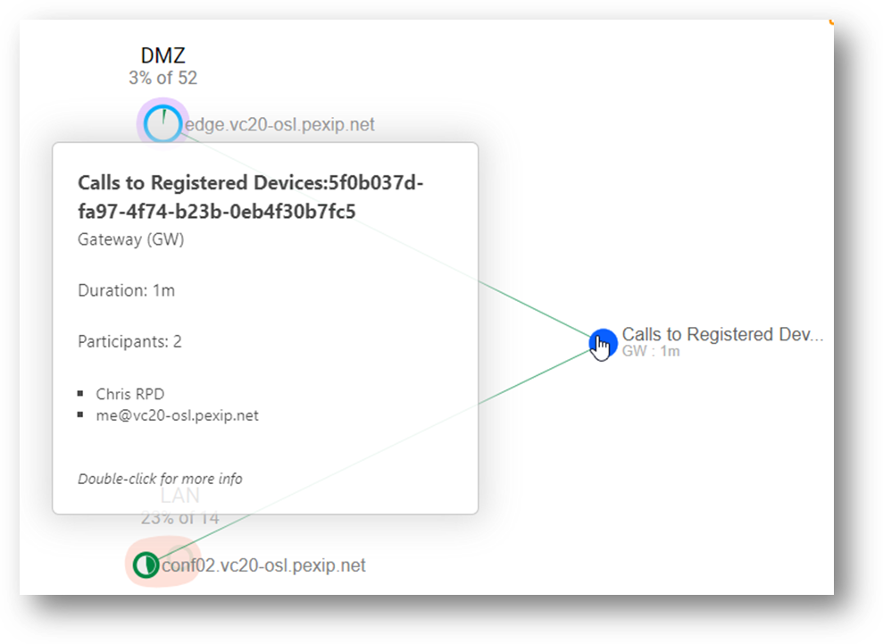
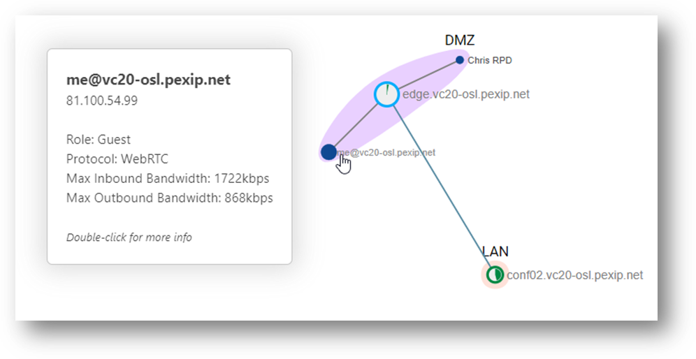
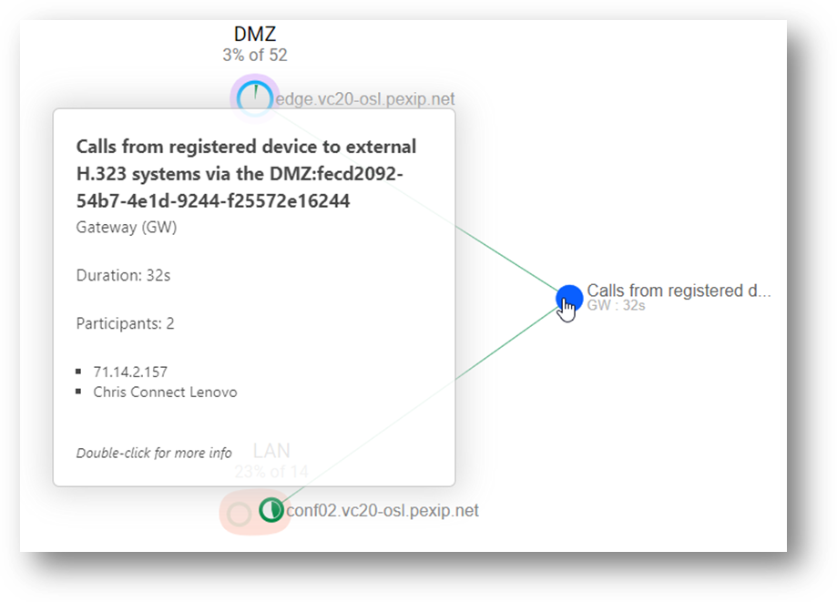
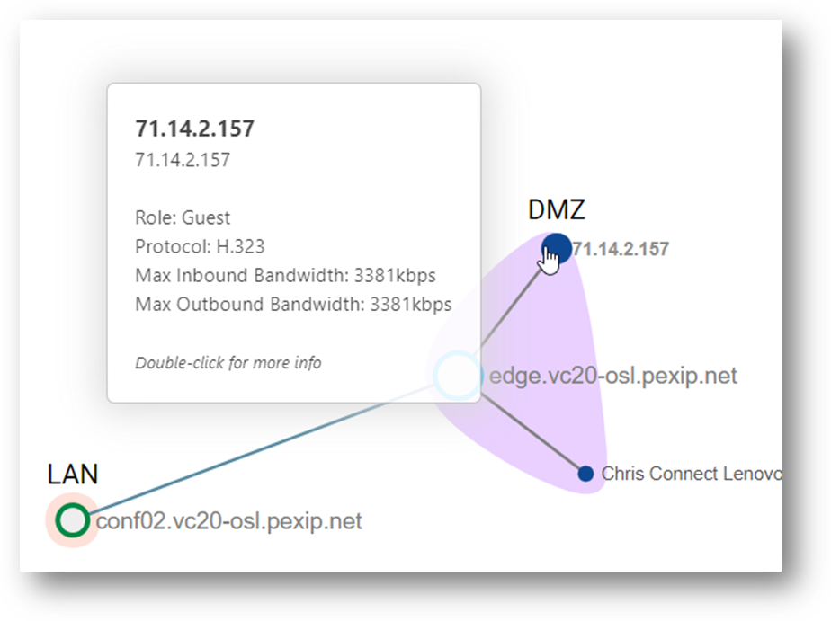
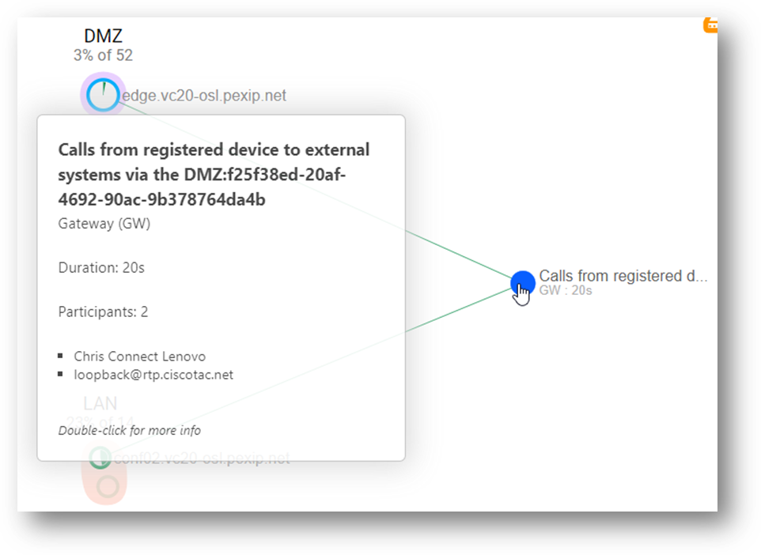
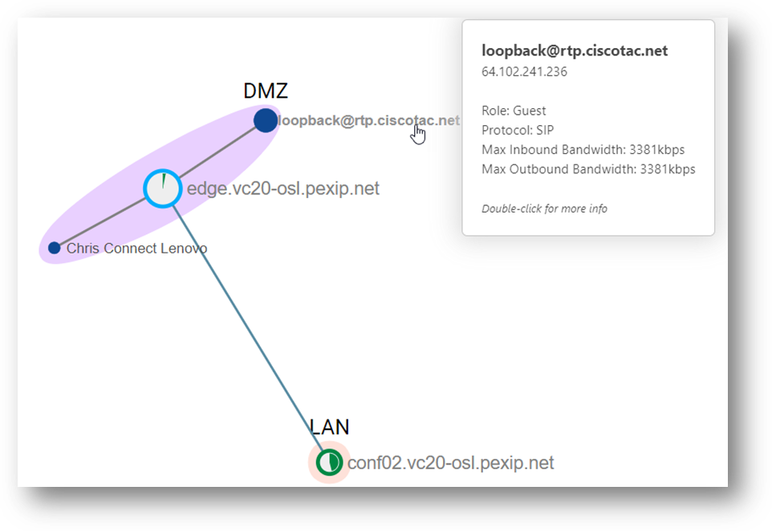

Suggested completion time: 40 minutes
Use section #4.2 of the lab sheet.
To register a device to Infinity:
Configure Infinity to accept the registration:
- Setup a Device Alias, click Users & Devices --> Device
Aliases, then click Add Device Alias.
- Add the following Information:
- Device alias (mandatory): add an alias that would usually look like a URI, for
example:
<name>@<Pexip infinity
domain>
Ensure it does not clash
with any other alias already configured on your system.
- Enable Infinity Connect registration (non-SSO): Checked.
- If you would like other devices using alternative protocols to register to Infinity, then select as
appropriate. NOTE: if you would like an H.323 device to register, you will likely
need to configure two aliases per device; the H.323 ID and E.164
number. BOTH these aliases need to match what is configured on the endpoint to allow the device to
register successfully.
- Add a username and password. For consistency, the username is
often the same as the alias of the device (although could be just the user part, for example).
- Click Save.
Configure the Connect client to register to Infinity:
- Download and install the Connect
client for Infinity on your computer (not the RDP server, and not the MMV client used by the Pexip
Service).
- Once installed, open the Settings (click the three dots ···), then
click Registrations.
- Registration Host: <Pexip infinity domain> (this works due to PexApp SRV
records inserted in the DNS namespace that resolve to your Edge node, and of course you could have multiple
Edge nodes for redundancy, so multiple SRVs).
- Alias, username, and password: configured as above in
Infinity.
If you would like to register other devices to Pexip, you can use the same alias or create other aliases as you
wish.
To allow calls to registered devices (where options are not listed below,
defaults given in the rule should be used):
- Add a Routing Rule, click Services --> Call Routing, then click
Add Call Routing Rule.
- Add the following Information:
- Name: Calls toward Registered Devices.
- Priority: 100.
- Outgoing calls from a conference: Checked (this allows devices to be called
directly from a VMR).
- Destination alias regex match: .+@<Pexip infinity
domain>
(don’t forget to escape any periods
in your domain in the RegEx pattern, e.g. .+@example\.com )
- Call target: Registered devices only.
- Click Save.
To dial from registered devices and VMRs to any external H.323 devices (where options are
not listed below, defaults given in the rule should be used):
- Add a Routing Rule, click Services --> Call Routing, then click
Add Call Routing Rule.
- Add the following Information:
- Name: Calls from registered devices and VMRs to external H.323 systems via the DMZ.
- Priority: 190.
- Outgoing calls from a conference: Checked (this allows devices to be called
directly from a VMR).
- Match incoming calls from registered devices only: Checked.
- Destination alias regex match:
^([1-9][0-9]?|1[0-9]{2}|2[01][0-9]|22[0-3])(\.([0-9]|[1-9][0-9]|1[0-9]{2}|2[0-4][0-9]|25[0-5])){3}$
- Call target: Registered devices or external systems.
- Outgoing location: DMZ.
- Protocol: H.323.
- Click Save.
To dial from registered devices and VMRs, to any external SIP devices (where options are not
listed below, defaults given in the rule should be used):
- Add a Routing Rule, click Services --> Call Routing, then click Add Call Routing
Rule.
- Add the following Information:
- Name: Calls from registered devices and VMRs to external SIP systems via the DMZ.
- Priority: 200.
- Outgoing calls from a conference: Checked (this allows devices to be called
directly from a VMR).
- Match incoming calls from registered devices only: Checked.
- Destination alias regex match: (?!.*@<Pexip infinity domain>$).*
- Call target: Registered devices or external systems.
- Outgoing location: DMZ.
- Click Save.
Testing
Before you test, ensure you have waited 1 minute for the configuration changes to synchronise across all the nodes. To test, create call flows that match each of the Routing Rules you have configured. HINT, when a
Routing Rule is matched, a Gateway service instance is created, and the name of the service will take on the
name of the Routing Rule plus an appended Globally Unique Identifier (GUID). This ensures that each gateway
instance can be identified from the other. You can see this in the screenshots below.
For outbound SIP and H.323 test sites, try testing against the trainier deployment, VC20.
Also check out https://community.cisco.com/t5/collaboration-voice-and-video/loopback-testing-for-telepresence/ta-p/3156607
(beware, some addresses may no longer work, although during the previous testing, sip:loopback@ciscotac.net, 64.102.241.236, and
71.14.2.157 worked).
Screenshots 1 and 2: Demonstrate how to successfully configure Pexip Infinity Services
There are two tasks to complete here.
Screenshot 1
Show the registration of an Infinity Connect desktop application (or external SIP/H.323 system). Grab some
screenshots of the registered devices and status in Infinity, for example:
A screenshot showing the Pexip Connect desktop client registered successfully to an Infinity platform
(notice that the boxes are greyed out, and the button at the bottom says
“Unregister”):

A screenshot showing the Registration status on Infinity, indicating that a client has successfully
registered:

Screenshot 2
Show call flows that match each of the 3 routing rules you have configured. When a routing rule is matched, a
gateway service instance will be created that will inherit the name of the routing rule and append a GUID.
Grab some screenshots of the calls as you see them in Live View, don’t forget to drill down into the
gateway service instance to analyse the participants.
A screenshot of the main Live View for an inbound call to a Registered Device:

A screenshot of the conference graph for an inbound call to a Registered Device:

A screenshot of the main Live View for a call from a registered device to an external H.323
system:

A screenshot of the conference graph for a call from a registered device to an external H.323
system:

A screenshot of the main Live View for a call from a registered device to an external SIP
system:

A screenshot of the conference graph for a call from a registered device to an external SIP
system:
